닳다
탁은결 개인전
Tak Eungyeol: Worn
철거를 앞둔 건물에서 계단과 문턱과 의자의 닳은 자리를 재고, 같은 깊이가 될 때까지 새 돌을 손으로 갈아 만든 조각 여섯 점.
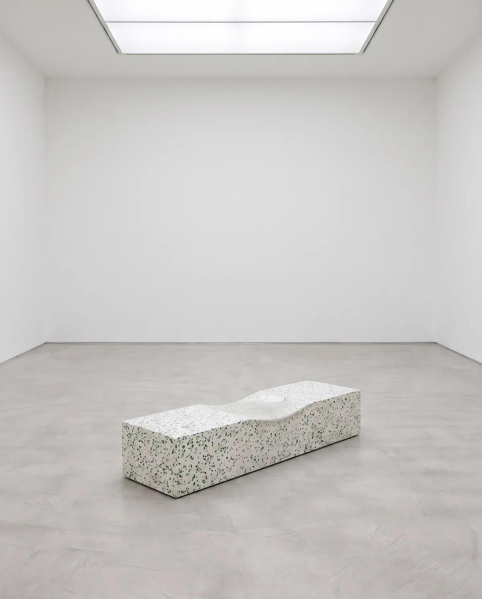
- 기간
- 2026.10.29 – 2027.2.28
- 장소
- 모롱시립미술관
1·2전시실 - 관람
- 화–일 10:00–18:00
수요일은 21:00까지 - 관람료
- 무료
전시 소개
계단 한가운데가 둥글게 패어 있다면, 아주 많은 사람이 아주 오래 그 자리를 밟았다는 뜻입니다.
탁은결은 2014년부터 모롱시에서 철거를 앞둔 건물을 찾아다니며 닳은 자리를 측량해 왔습니다. 시장 계단의 셋째 단, 초등학교 교실 뒷문의 문턱, 버스 대합실의 긴 의자, 공중목욕탕 온탕의 가장자리. 건물이 헐리기 전에 그는 패인 깊이를 0.1밀리미터 단위로 재어 기록합니다. 그리고 그 동네 고물상에서 모은 초록 병을 깨뜨려 백시멘트에 섞고, 원래 크기 그대로 새 인조석을 부어 굳힙니다.
표면은 몇 달에 걸친 물갈기로 만들어집니다. 수십 년 동안 수만 명의 발과 손과 몸이 한 일을, 작가는 숫돌과 물로 혼자 되풀이합니다. 기록해 둔 깊이에 닿으면 갈기를 멈춥니다. 그래서 그의 조각은 닳은 모양을 본뜬 것이 아니라, 처음부터 다시 닳은 것입니다.
《닳다》는 작가가 10년 넘게 이어 온 작업을 처음으로 한자리에 모은 전시입니다. 2019년의 〈뒷문 문턱〉부터 이번 전시를 위해 2년 동안 만든 〈2번 출구, 열네 단〉까지, 조각 여섯 점과 탁본 아홉 점을 소개합니다.
편서율, 모롱시립미술관 학예연구사
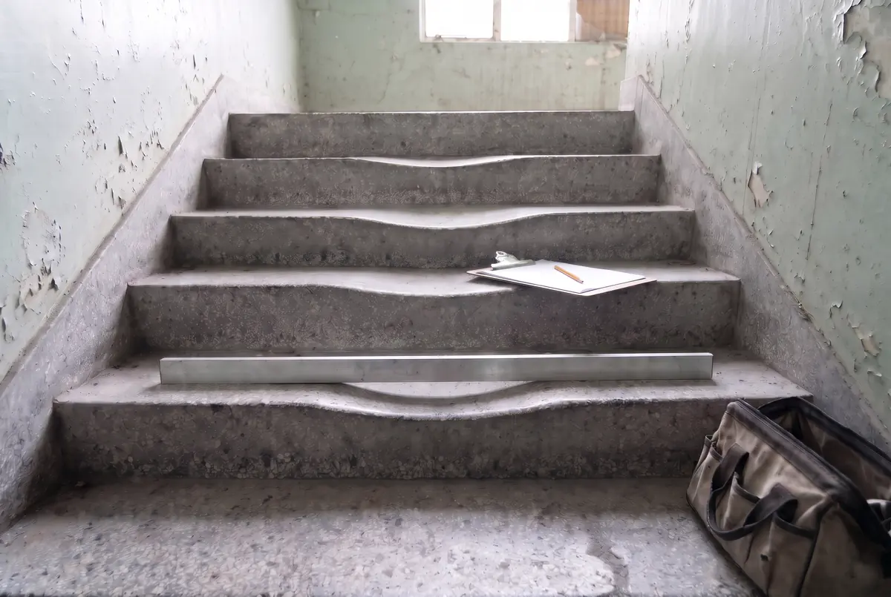
탁은결
1981년 모롱시에서 태어남
조각을 공부한 뒤 인조석 바닥을 까는 현장에서 일하며 물갈기를 배웠습니다. 2014년부터 철거를 앞둔 건물의 닳은 자리를 재어 왔고, 지금까지 서른일곱 곳을 기록해 그중 여섯 곳을 다시 만들었습니다. 그 여섯 점이 모두 이 전시에 나옵니다. 이번이 첫 미술관 개인전이며, 모롱시에서 살며 일합니다.
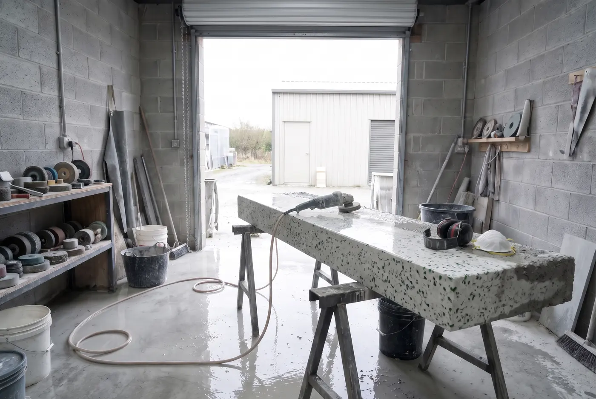
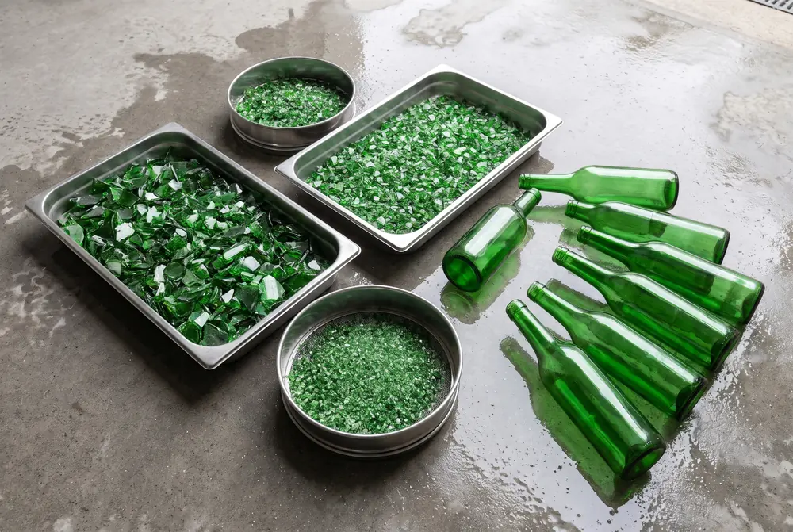
작품
조각 여섯 점과 탁본 아홉 점. 크기는 높이 × 너비 × 깊이, 센티미터입니다. 숫자를 누르면 출품작 목록으로 갑니다.
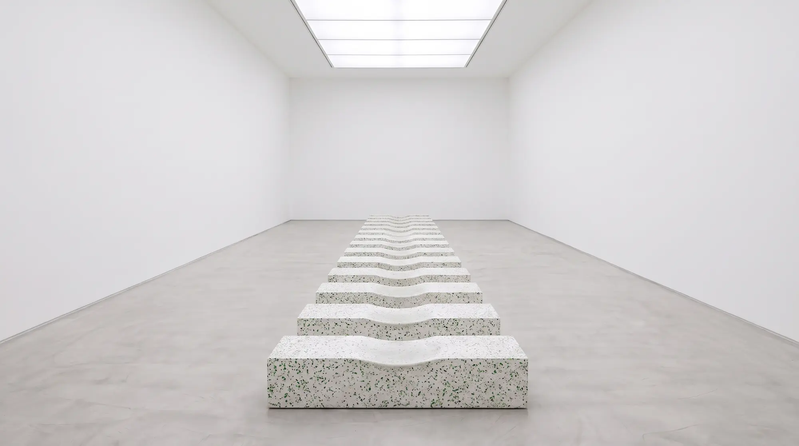
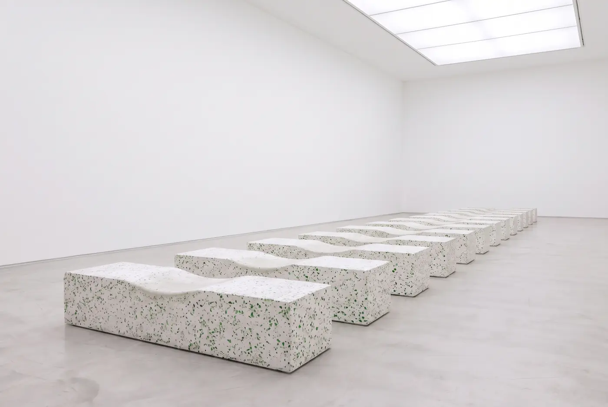
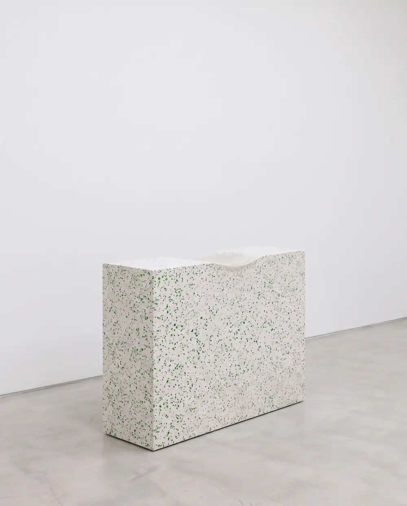
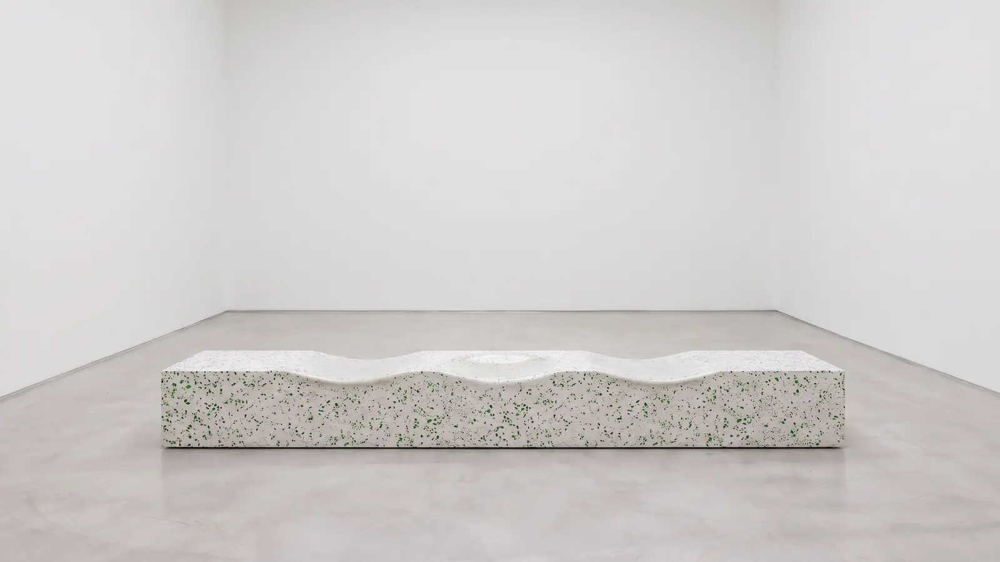
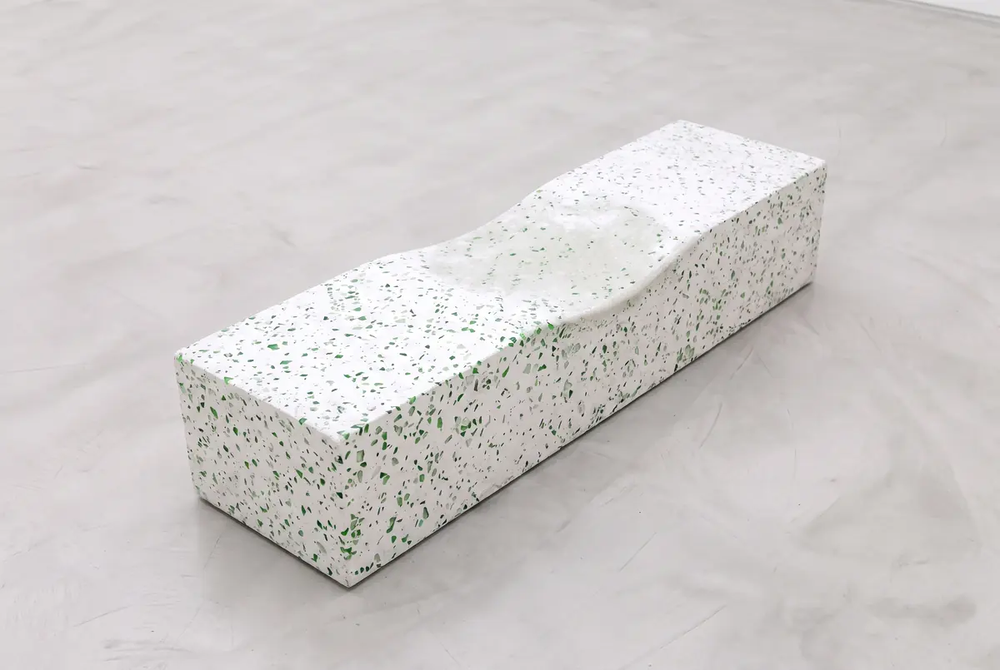
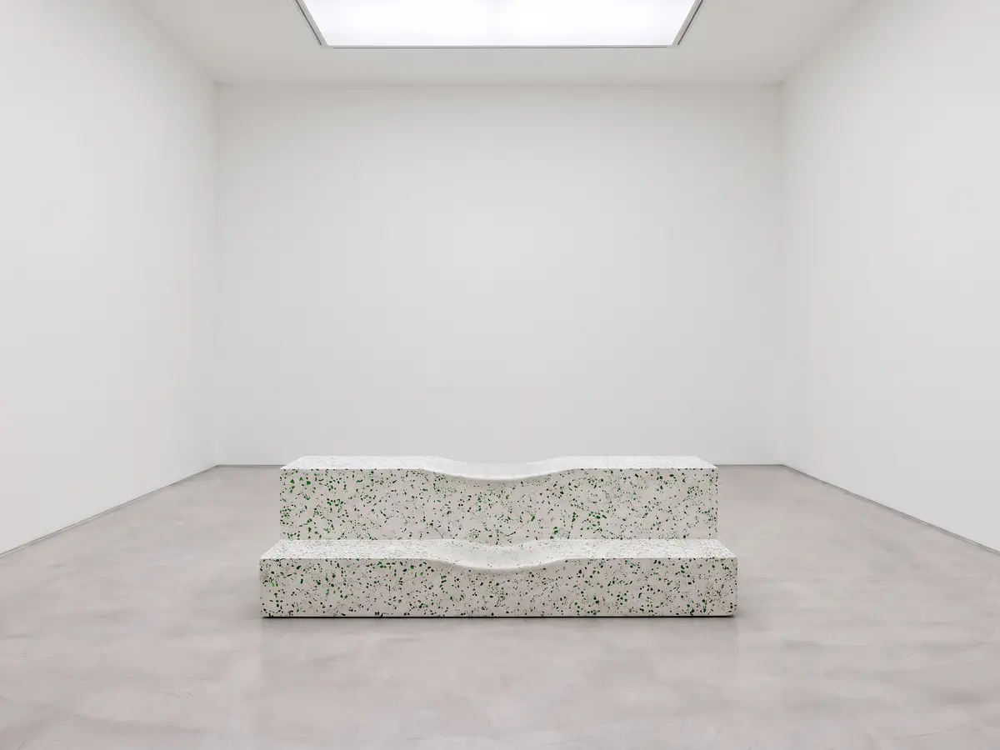
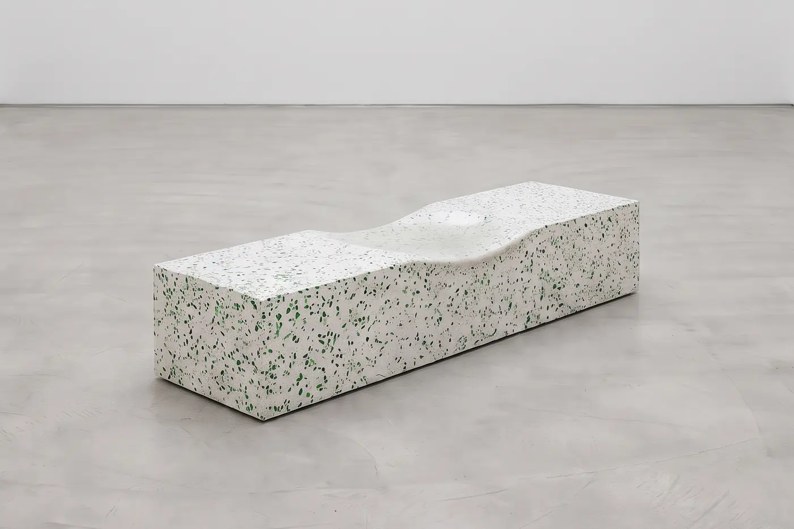
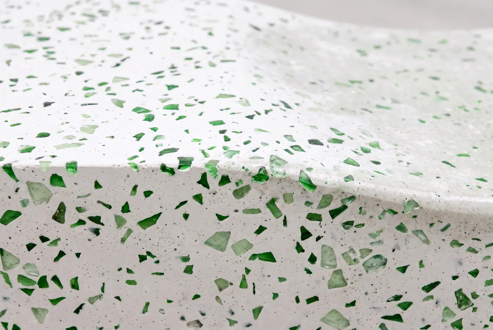
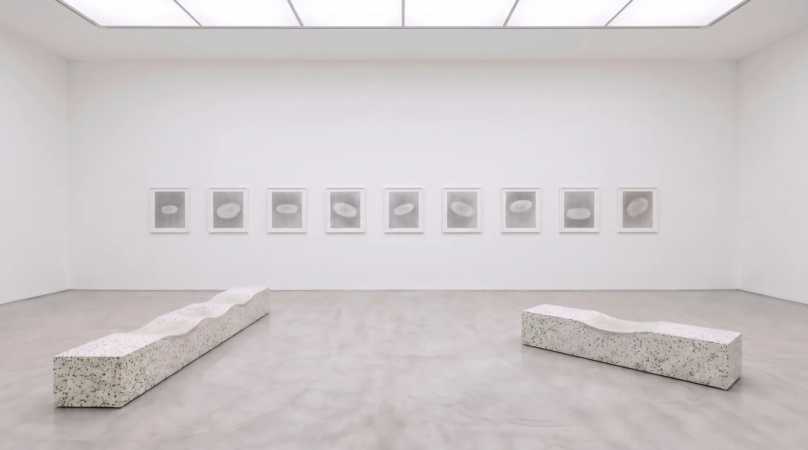
출품작 목록
-
1
〈뒷문 문턱〉 Back Door Threshold
2019
인조석(백시멘트, 초록 병유리), 물갈기
16 × 96 × 26
모롱초등학교 2층 4학년 2반 교실 뒷문, 1981–2018가장 깊은 곳 1.8cm
-
2
〈셋째 단〉 The Third Step
2021
인조석(백시멘트, 초록 병유리), 물갈기
19 × 128 × 34
모롱중앙시장 동쪽 계단 셋째 단, 1974–2021가장 깊은 곳 4.6cm
-
3
〈매표 창구〉 Ticket Window
2022
인조석(백시멘트, 초록 병유리), 물갈기
104 × 140 × 46
모롱시외버스터미널 매표소 3번 창구, 1979–2022가장 깊은 곳 0.9cm
-
4
〈대합실 의자〉 Waiting Room Bench
2023
인조석(백시멘트, 초록 병유리), 물갈기
44 × 360 × 42
모롱시외버스터미널 대합실 둘째 줄 의자, 1979–2022가장 깊은 곳 3.1cm
-
5
〈탕 가장자리〉 Edge of the Bath
2025
인조석(백시멘트, 초록 병유리), 물갈기
46 × 210 × 88
모롱동부목욕탕 온탕 가장자리, 1983–2024가장 깊은 곳 3.7cm
-
6
〈2번 출구, 열네 단〉 Exit 2, Fourteen Steps
2025–2026
인조석(백시멘트, 초록 병유리), 물갈기, 14점. 모롱시립미술관 신작 지원
각 17 × 150 × 30설치 길이 2,140
모롱역 2번 출구 계단, 1987–2025가장 깊은 곳 5.2cm (맨 아래 단)
-
7
〈닳은 자리 탁본〉 Rubbings of Worn Places
2014–2026
종이에 흑연, 9점
각 76 × 56
작가가 측량한 서른일곱 곳 가운데 아홉 곳
모든 작품은 작가 소장. 작품에 손을 댈 수는 없지만, 2층 자료실에서 같은 재료로 만든 시편을 만져 볼 수 있습니다.
프로그램
모두 무료입니다. 신청이 필요한 프로그램은 행사 2주 전 오전 10시부터 미술관 누리집에서 받습니다. 이 페이지는 가상 전시라 신청을 받지 않습니다.
-
11.21토요일 15:00–16:30
작가와의 대화
작가가 서른일곱 곳을 재며 남긴 측량 노트를 처음 공개합니다. 기획자 편서율이 진행하고, 끝난 뒤 1전시실에서 짧게 작품 앞 질문을 받습니다.
-
매주수요일 19:00, 40분
학예사와 걷기
늦게까지 여는 수요일 저녁, 학예사와 함께 1·2전시실을 천천히 걸으며 작품마다 원래 있던 자리 이야기를 듣습니다.
-
12.5 · 12.19두 번 모두 토요일 14:00–17:00
워크숍 〈닳은 자리 찾기〉
미술관 주변 골목과 계단을 걸으며 많이 밟히고 많이 잡힌 자리를 찾고, 종이와 흑연으로 탁본을 떠 옵니다. 재료는 미술관에서 준비합니다.
-
1.16 · 1.30두 번 모두 토요일 14:00, 50분
물갈기 시연
작가가 작업실 장비를 옮겨 와 새 인조석 덩어리를 갈아 보입니다. 물과 소리가 나니 겉옷을 챙겨 주세요. 비가 오면 교육동 1층에서 합니다.
관람 안내
- 관람 시간
- 화–일 10:00–18:00
수요일 10:00–21:00
입장은 끝나기 30분 전까지 - 쉬는 날
- 매주 월요일
1월 1일, 설날 당일 - 관람료
- 무료. 단체 관람(20명 이상)은 일주일 전까지 알려 주세요.
- 주소
- 모롱시 너덜샘로 40, 모롱시립미술관가상 서비스입니다. 실제 주소가 아닙니다.
- 오시는 길
- 모롱역 2번 출구에서 걸어서 12분. 2번 출구 계단은 2025년에 새로 놓였고, 옛 계단은 1전시실에 있습니다.
시내버스 7, 31번 미술관 앞 하차 - 주차
- 40대, 관람객은 2시간 무료
- 편의
- 모든 전시실을 계단 없이 다닐 수 있습니다. 휠체어와 유모차는 1층 안내데스크에서 빌려 드립니다.
- 사진
- 플래시 없이 찍을 수 있습니다. 작품 위에 물건을 올려 두지 말아 주세요.
주최와 후원
- 주최
- 모롱시립미술관
- 후원
- 모롱시, 모롱문화재단, 모롱유리재생협동조합
- 자료 협조
- 모롱중앙시장 상인회, 모롱시외버스터미널, 모롱동부목욕탕, 모롱교통공사
- 기획
- 편서율
- 전시 진행
- 하도윤, 문채린
- 공간 디자인
- 기슬아
- 그래픽 디자인
- 엄세린
- 설치
- 탁은결 작업실, 모롱시립미술관 설치팀
- 사진
- 여민결
- 번역
- 로아 해리슨